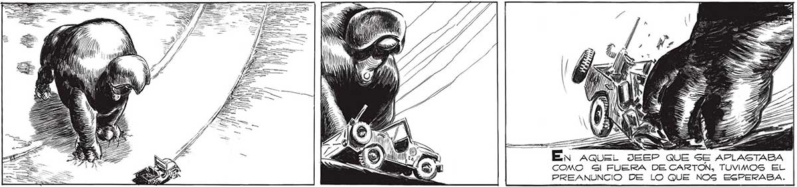

¡QUIERO AGRADECERLES EL VALOR CON QUE ¡FUEGO, MUCHACHOS! HAN PELEADO ¡QUIERO PEDIRLES QUE MURA- TODO! Í MOS COMBATIENDO! ¡QUE NUESTRAS ARMAS, SN, 1222 Í AUNQUE INÚTILES, NO DEJEN DE DISPARAR HAS-| | WN Dar a A TA EL ÚLTIMO INSTANTE! DEN SN PRA Y IA Hueso una NOTA INESPERADAMENTE AUTORITARIA EN LA YOZ z DEL MAYOR. ATENCION TODOS... COMO USTEDES MISMOS HAN PODIDO VER, PARA NOSOTROS NO HAY YA GALVACION POSIBLE. EGE TANQUE NO FUE DESTRUIDO POR FANTASMAS, MOSCA... NI LOS FANTASMAS DERRIBAN EDIFICIOS... ETT ¡ATENCION TODOS! y ESTAMOS MAS LISTOS AÚN DE LO QUE PENSABAMOS... LA SRANDEZA PUEDE SER CONTAGIOSA. SABÍAMOS QUE ESTABAMOS PERDIDOS, QUE NUESTRAS ARMAS ERAN INSERVIBLES, PERO NI UNO SOLO DEJO DE OBEDECER AL MAYOR. MOS CON CINCO. Y NOS ATACAN CON TREINTA... pS Urra AQUEL JEEP QUE SE APLASTABA E COMO Gl FUERA DE CARTON, TUVIMOS EL de PREANUNCIO DE LO QUE NOS ESPERABA. 217
